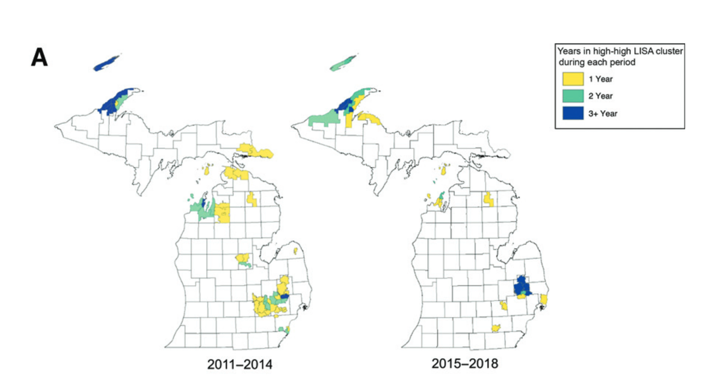

Local spatial clustering of non-vaccination: Methodological and policy considerations
EPID 684
Spatial Epidemiology
3/22/2022
Jon Zelner
jzelner@umich.edu
epibayes.io
Today’s Theme

Measuring and understanding the public health implications of spatially clustered susceptibility through the lens of vaccine 💉 hesitancy.
Agenda
- Review of global Moran’s I
- Measuring spatial clustering with simulated data hands-on
- Quick intro to local Moran’s I
- Discussion of Masters et al. paper on policy impacts on non-medical exemption rates and their clustering.
Moran’s I revisited
- Negative values of I indicate that neighboring areas are more likely to be dissimilar to each other than non-neighboring ones.
- Positive values indicate that neighboring values are more likely to be similar to each other.
- Can accomodate a range of ways of calculating values and distances, but here we’ll stick to something simple.
Really just a measure of correlation
Let’s start with classic pearson correlation:
\[
r = \frac{\sum_{i} (x_i - \bar{x})(y_i - \bar{y})}{\sqrt{(x_i - \bar{x})^2} \sqrt{(y_i - \bar{y})^2}}
\]
Can be interpreted as the ratio of the covariance of x and y to the product of their standard deviations: \[
r = \frac{\text{cov(x,y)}}{\sigma_x \sigma_y}
\]
Moran’s I translates from correlation between two variable to spatial autocorrelation
\[
I = \frac{N}{W} \frac{\sum_{i} \sum_{j} w_{ij} (x_i - \bar{x}) (x_j - \bar{x}) }{\sum_{i}(x_i - \bar{x})^2}
\]
Where:
- N is the number of spatial areas & W is the sum of all the spatial
- \(x_i\) and \(x_j\) are the values of the i-th and j-th cells, \(\bar{x}\) is the mean value of x across all squares
- \(w_{ij}\) indicates whether i & j are neighbors (yes = 1, no = 0 )
- Only looking at neighbors: \(w_{ij} = 0\) when \(i = j\)
Moran’s I translates from correlation between two variables to spatial autocorrelation in a single variable
\[
I = \frac{N}{W} \frac{\sum_{i} \text{Covariance of x among neighbors of i} }{\text{Variance of x}}
\]
Some questions
Which level of clustering has the strongest impact on the clustering measures?
Which measure seems to be most sensitive to small changes in the probability of non-vaccination clustering?
How sensitive are the results for Moran’s I to the choice of ♜’s vs. ♛’s contiguity?
Does making non-medical exemptions harder to get impact their prevalence?
- How would you describe the impact of the 2015 rules change on the trajectory of NMEs in Michigan?
- What do we lean from looking at the spatial clustering of NMEs in Michigan before and after the policy change?
- Does the spatial perspective in this piece add to the overall argument?
statistics provide estimates of clustering at individual locations

Local clustering of philosophical non-medical exemptions to vaccination in Michigan. (From Masters et al., 2021)
Moran’s I uses the values at each location instead of summing over all locations
\[
I_i = (x_i - \bar{x}) \sum_j w_{ij} (x_j - \bar{x})
\]
- Can look at high/high (> 0), low/low (< 0) and high/low (>0, <0) clusters.
- Approximate significance obtained by randomizing \(x_i\) values, computing \(I_i\) values at each location.
- Should decide which type of cluster(s) are of interest ahead of time.